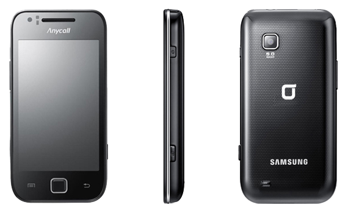

삼성 갤럭시 K
1. 외관

삼성전자가 2010년 3월, CTIA 2010에서 공개한 갤럭시 S의 파생 모델.
2. 사양
| 프로세서 | 삼성 엑시노스 3110 SoC. ARM Cortex-A8 1 GHz CPU, PowerVR SGX540 200 MHz GPU | ||
| 메모리 | 512 MB RAM, 1 GB OneNAND 내장 메모리, micro SDHC (최대 32 GB 지원) | ||
| 디스플레이 |
3.7인치 WVGA(480 x 800) RG-BG 펜타일 서브픽셀 방식의 SMD AMOLED Plus 멀티터치 지원 정전식 터치 스크린 |
||
| 네트워크 | 기본 | HSDPA & HSUPA & UMTS, GSM & EDGE | Wi-Fi 802.11b/g/n, 블루투스 3.0 |
| - | - | ||
| 카메라 | 전면 30만 화소, 후면 500만 화소 AF | ||
| 배터리 | Li-Ion 1500 mAh | ||
| 운영체제 | 안드로이드 2.1 (Eclair) → 2.2 (Froyo) → 2.3 (Gingerbread) | ||
| 규격 | 59.6 x 119.5 x 12.4 mm, 131 g | ||
3. 상세
2010년 10월에 출시한 안드로이드 스마트폰. 대한민국 KT용 모델이다.
갤럭시 U의 WCDMA 통신 지원 모델.
실제로 모양과 두께, 무게가 같고, 모델명도 SHW-130K로 SHW-M130L을 쓰는 갤럭시 U와 통신사 구분 알파벳을 제외하고는 동일하다.
모양이 갤럭시 U의 것인 이유는 당항목에도 있지만 한국 내수용 갤럭시 S가 삼성전자와 SK텔레콤간 긴밀한 협력을 통해 만들어진 제품이기 때문